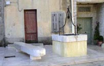
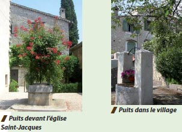

Le patrimoine vernaculaire - L'eau - LA COLLE-SUR-LOUP
Fontaine
Cette fontaine, située rue Clémenceau, révèle un dessin plus moderne que les autres fontaines observées sur l’ensemble du territoire CASA (datation : 1940). Elle est conçue comme un monument, possède un élément vertical en pierre travaillé dans son épaisseur. Elle accueille sur la partie la plus épaisse le bouton poussoir qui permet d’approvisionner en eau le petit bassin semi cylindrique en pierre. Celui-ci est particulièrement travaillé à la base et au niveau du couronnement. La fontaine possède aussi deux barres métalliques qui permettent d’accueillir un seau ou autres récipients pouvant contenir l’eau.

Les maisons du village ont une particularité : elles possèdent presque toutes un puits, puits particulier ou commun à deux ou trois maisons avec droit de puisage par une petite fenêtre, soit environ une centaine de puits répartie sur les deux axes du village.
Puits
Ce puits, daté de 1777 est situé en face de la Place de Gaulle dans la rue Clémenceau. Il présente une sorte de charpente métallique, dotée d’une poulie qui permettait de prendre l’eau. Le puits est posé sur un socle en pierre polie et est accompagné d’un banc en pierre.
Puits
Ce puits, daté de 1777 est situé en face de la Place de Gaulle dans la rue Clémenceau. Il présente une sorte de charpente métallique, dotée d’une poulie qui permettait de prendre l’eau. Le puits est posé sur un socle en pierre polie et est accompagné d’un banc en pierre.

